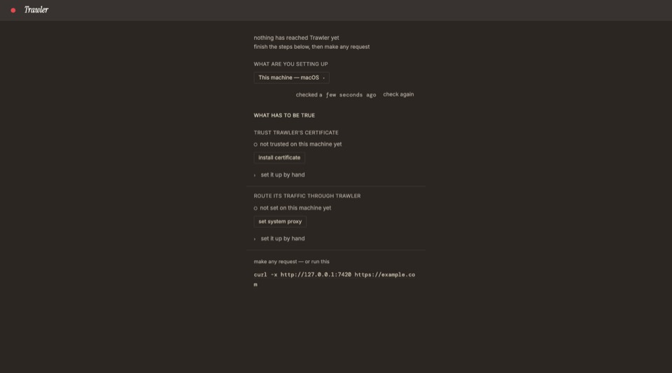
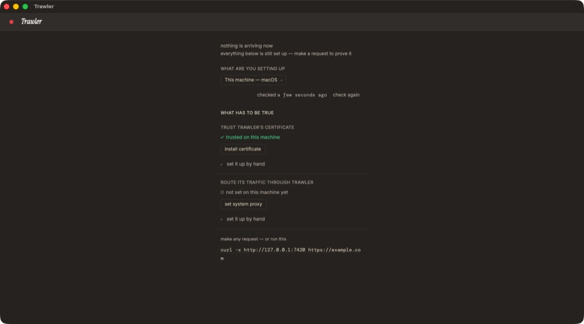
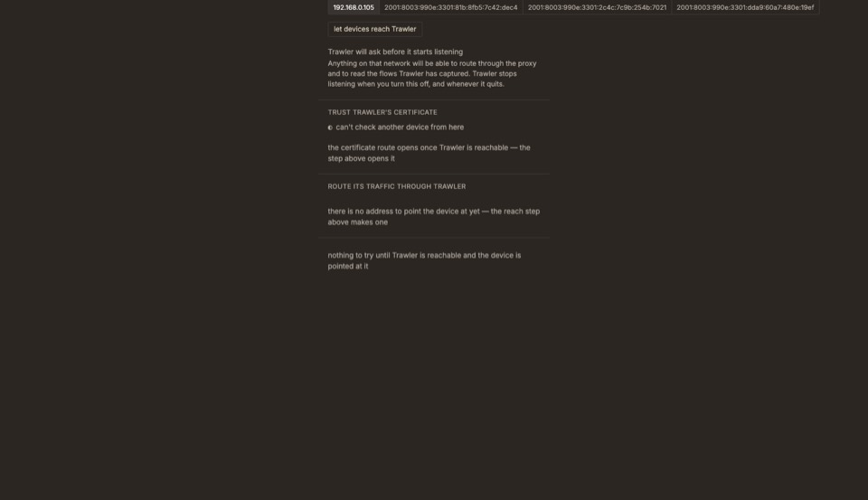
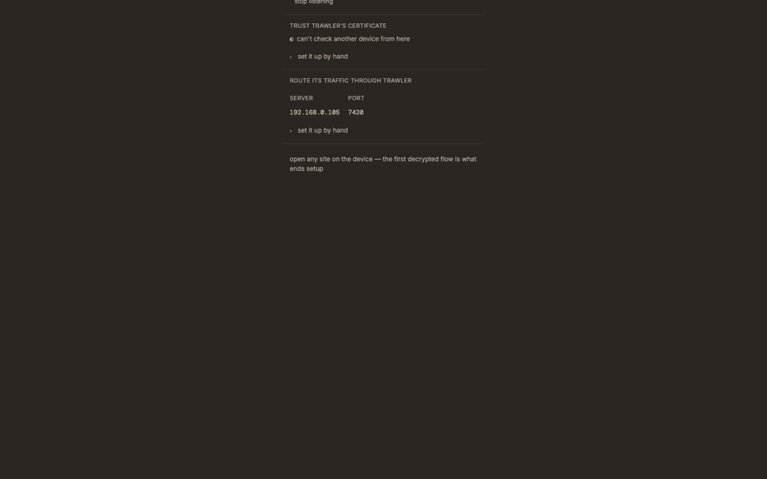
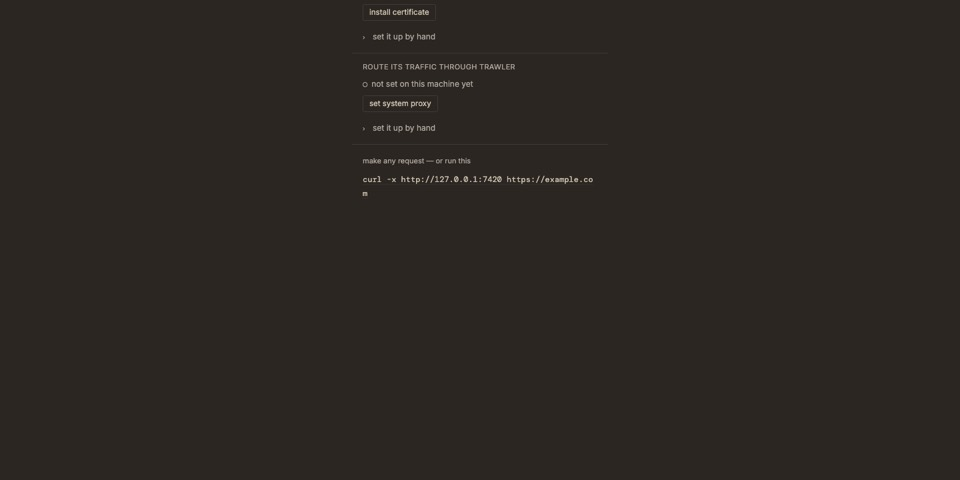
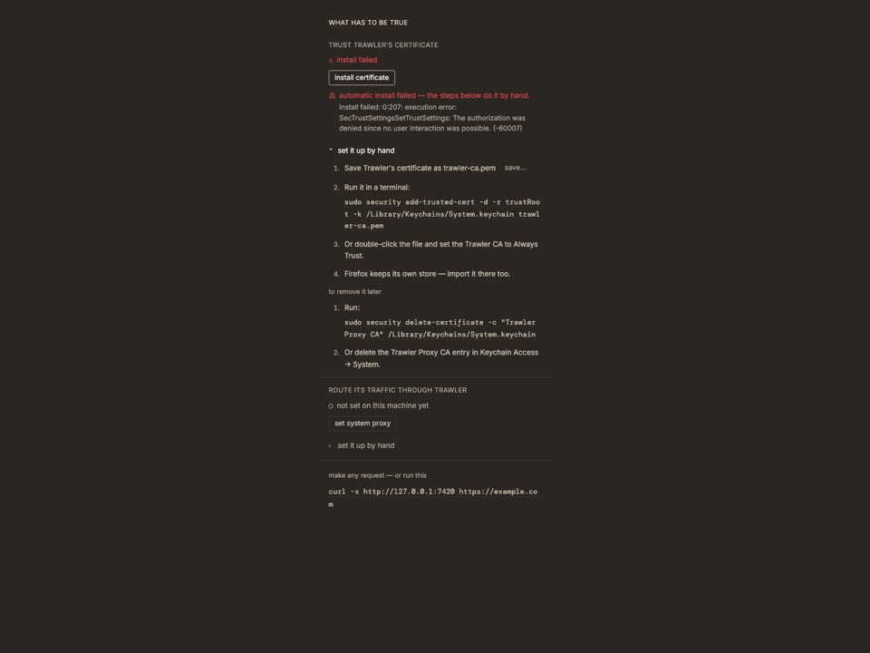
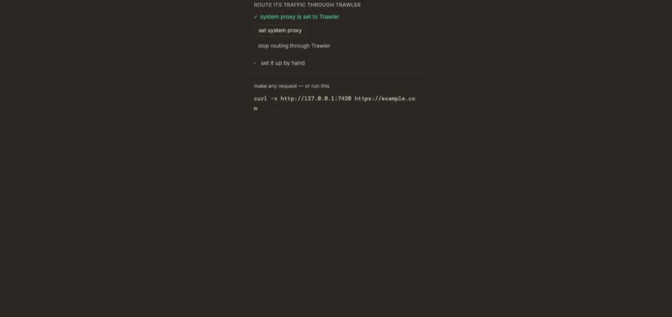
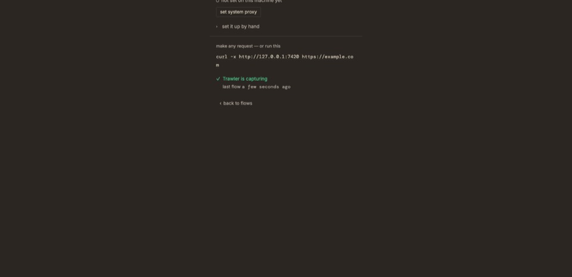

Verdict
The screen passes every test the epic wrote for it and fails the one test a user runs: "what do I do now?" Every zone is a verdict or a precondition — a statement about the machine — where a user needs a task, an order and one obvious button. The truthfulness rules behind it (DEC-13, DEC-33, DEC-55) are right and stay. What changes is who the sentences are written for.
| Dimension | Grade | What the run showed |
|---|---|---|
| Orientation — what is this screen, why these steps | ✗ fail | No title, no purpose sentence. The first words a new user reads are nothing has reached Trawler yet, in lowercase grey (TC-01) |
| Language | ✗ fail | Fourteen sentences on the screen are internal vocabulary — verdict, reach, decrypt, flow, precondition, route, listen on, platform (findings F3, F4) |
| Order and progress | ⚠ weak | Three tasks, no numbering, no primary action; a hollow ○ glyph is the only progress cue (F6, F7) |
| Setting up this Mac | ⚠ weak | The happy path works: two small buttons, two password prompts. Nothing signposts it as the thing to do first (F7, F16) |
| Setting up a phone | ✗ fail | Raw interface names and three temporary IPv6 addresses, a security warning before any action, and the only instructions the phone user has hidden behind set it up by hand (F10, F11, F12) |
| Truthfulness | ⚠ three false sentences | The two layers stay apart as designed, but the Simulator trust claim, everything below is still set up and and for which platform are not true (F14, F16, F21) |
| Feedback and closure | ⚠ weak | Cancelling the network confirm says nothing; success replaces the screen with the list and no message (F13, F22) |
| Layout | ⚠ weak | A 370 px column in a 1440 px window; the try-it command wraps inside
example.com; the address control overflows the column (F11, F25) |
How it was tested
| Layer | What ran | Why this way |
|---|---|---|
| Core | target/debug/trawler at the reviewed tip, loopback, the CA in ca/ |
Real flows, real tunnels, the real GET /reach answer for this Mac (one IPv4,
three IPv6, all named en1) |
| Screen | The Vite dev bundle in headless Chrome under a scripted Tauri shell stub: the two probes,
the reach confirm, install, set-proxy and the save dialog each answer per scenario;
/reach mocked for the armed scenarios |
Every verdict and failure state without changing this Mac and without exposing it on the LAN. Outside Tauri the app throws at render (it reads the window metadata), so the stub is the only way to run the screen in a browser |
| Native | trawler-ui debug binary against the same core, screenshotted |
The real probe verdicts of this Mac, and a render check against the browser run — they match pixel for pixel at 1440×800 |
| Traffic | curl over plain HTTP · a Python client that does not trust the CA · curl with
--cacert ca/trawler-ca.pem |
The plain, tunnel-only and decrypted readings. macOS curl trusts this Mac's keychain
even with --cacert, which is why a second client was needed for the
untrusted case |
| Not run | The elevated actions on this Mac · the quit dialog · a physical phone · real Windows and Linux hosts (simulated by user agent) · a screen-reader pass | Install and set-proxy change the machine and need the owner's password; the rest is outside this review's question |
Test matrix — what the user reads, per scenario
| TC | Scenario | What the user reads | Result |
|---|---|---|---|
| TC-01 | Fresh launch, this Mac, nothing set up, window 1440×800 | nothing has reached Trawler yet · finish the steps below, then make any request · WHAT ARE YOU SETTING UP · This machine — macOS | ✗ F1 F2 F7 |
| TC-02 | Same, both set it up by hand opened | Four trust steps and one proxy command inline; the removal steps render under them by default | ⚠ F8 |
| TC-03 | The platform picker opened | Eight options in a dropdown: this machine, three "another" computers, two simulators, two phones | ⚠ F6 |
| TC-04 | iOS Simulator | not trusted on this machine yet · the Simulator uses this Mac's certificate store — installing it here covers it — and no install button | ✗ F14 F15 |
| TC-05 | Android emulator | All steps behind set it up by hand, though no automatic path exists | ✗ F10 |
| TC-06 | Another Mac / Windows PC / Ubuntu machine, network off | Three sections each saying what cannot happen yet | ⚠ F9 |
| TC-07 | iPhone or iPad, network off | LET THIS DEVICE REACH TRAWLER · Trawler answers on this machine only · LISTEN ON · en1 · 192.168.0.105 · en1 · 2001:8003:990e:3301:81b:… (×3) then the warning paragraph | ✗ F11 F12 |
| TC-08 | Minimum window 850×600 | The column fits; the try-it zone sits below the fold | ✓ |
| TC-09 | Probes in flight | checking this machine…, both verdicts checking…, button disabled | ✓ |
| TC-10 | Already set up: certificate trusted, proxy is Trawler's | ✓ ✓ under a headline that still says finish the steps below; both buttons still offered | ✗ F16 |
| TC-11 | The native app on this Mac (real probes: certificate trusted, proxy not set) | nothing is arriving now · everything below is still set up — make a request to prove it over a proxy step that reads not set on this machine yet | ✗ F16 |
| TC-12 | Another proxy already set on this Mac | another proxy is set · point it at Trawler here, or capture from a device configured to use Trawler; the button below would overwrite it without warning | ⚠ F17 |
| TC-13 | Linux host | No buttons, commands inline; can't check on this platform · the traffic verdict is what proves it | ⚠ F4 |
| TC-14 | Windows host | Same shape as macOS with certutil and reg commands |
✓ |
| TC-15 | Install running | Button disabled, installing — approve the system prompt… | ✓ |
| TC-16 | Install failed — password prompt cancelled | ⚠ install failed · automatic install failed — the steps below do it by hand · install failed: 0:207: execution error: SecTrustSettingsSetTrustSettings: The authorization was denied since no user interaction was possible. (-60007); manual steps open | ⚠ F18 |
| TC-17 | Set proxy failed | Same shape, raw User cancelled. (-128) | ⚠ F18 |
| TC-18 | Install then set proxy succeed | installed. we'll confirm it on your first flow. beside ✓ trusted on this machine; then proxy set. we'll confirm it on your first flow. | ⚠ F19 |
| TC-19 | Save certificate: cancelled · renamed in the dialog | nothing was saved — the save was cancelled. · saved as trawler-ca (1).pem — the steps here name trawler-ca.pem, so use trawler-ca (1).pem instead. | ✓ wordy |
| TC-20 | Allow devices — dialog open | Button disabled, spinner, waiting for your answer… | ✓ |
| TC-21 | Allow devices — Cancel in the dialog | Screen unchanged. No sentence anywhere | ✗ F13 |
| TC-22 | Allow devices — Allow, iPhone selected | ✓ listening on 192.168.0.105 — until Trawler quits; server and port shown; the certificate URL and all four phone steps behind set it up by hand | ✗ F10 |
| TC-23 | Network allowed, then switch to This machine | No trace anywhere that this Mac is listening on the network | ✗ F20 |
| TC-24 | A plain HTTP request arrives | traffic is arriving over plain HTTP only · an HTTPS request is what proves decryption | ⚠ F4 |
| TC-25 | HTTPS from a client that does not trust the certificate | ⚠ traffic is arriving, but nothing is decrypting · the trust step below says what to fix, and for which platform; under trust: something is routing to Trawler and none of it is decrypting — the platform it comes from does not trust the certificate yet. The steps below are that platform's. | ✗ F21 |
| TC-26 | The first decrypted HTTPS request | The screen is replaced by the flow list. Nothing says setup succeeded | ⚠ F22 |
| TC-27 | Setup reopened from the header dot while capturing | ✓ Trawler is capturing · last flow a few seconds ago at the bottom; the header dot is red, titled Not capturing yet | ⚠ F23 |
| TC-28 | 30 s after the last request | nothing is arriving now · last flow a few seconds ago | ⚠ the verdict has expired while its own timestamp says seconds |
| TC-29 | back to flows | The list | ✓ |
What a first-time user sees








Findings
Severity: P0 a defect or a false sentence — fix before the epic merges · P1 the user-facing rewrite the screen needs · P2 an improvement that can follow.
A · Orientation and language
| # | What the user experiences | Why it happens | Change |
|---|---|---|---|
| P1 F1 | No title, no purpose. The screen opens on a lowercase grey failure verdict — nothing has reached Trawler yet — before the user has done anything or knows what Trawler is | The design of record makes the verdict zone the screen's lead sentence (round 3 split the zone by phase) | A title — Set up capture — and one sentence a newcomer can act on: Trawler sits between a device and the internet. To show its HTTPS traffic, the device must trust Trawler's certificate and send its traffic to Trawler. The verdict becomes status under the steps |
| P1 F2 | Section labels are the design's own questions: WHAT ARE YOU SETTING UP, WHAT HAS TO BE TRUE, LET THIS DEVICE REACH TRAWLER | The zone names of the mockup were carried onto the screen as labels | Which device's traffic do you want to see? · Steps · 1. Allow your iPhone to connect |
| P1 F3 | Internal vocabulary reaches the user: flow, decrypting, verdict, reach, route its traffic, listen on, platform. the first decrypted flow is what ends setup means nothing to someone who has not yet seen a flow | The lexicon term flow and the run's proposed terms (arriving, platform) were written for consistency across screens, not for a first contact | On this screen: request, website, device, certificate, proxy. flow is introduced by the list, after setup |
| P1 F4 | Sentences describe what the app can know, not what the user should do: can't check another device from here, the traffic verdict is what proves it, an HTTPS request is what proves decryption, nothing to try until Trawler is reachable and the device is pointed at it | DEC-33's honesty rule was applied as copy: every limit of the probes is stated to the user as a sentence about the probes | Honesty stays, phrasing flips to the user's action and what they will see: We'll confirm this when your iPhone's first request arrives · Open a website that starts with https:// |
| P2 F5 | Five state glyphs — ○ ◐ ✓ ⚠ ⟳ — with no legend; ◐ for can't check is unguessable | StatusLine renders a glyph plus a ≤40-character fragment | Words beside every glyph in plain state language: Not done · Done · Can't be checked from here · Failed · Checking |
B · Order, hierarchy and progress
| # | What the user experiences | Why it happens | Change |
|---|---|---|---|
| P1 F6 | The one question is a dropdown. The phone path is invisible until it is opened; eight items mix operating systems and devices (Another Ubuntu machine beside iPhone or iPad) | The run chose a single Select as the screen's only axis |
Keep one axis; render it as five or six tiles with icons — This Mac (selected) · iPhone or iPad · Android · iOS Simulator · Android emulator · Another computer — so the choices are seen, not discovered |
| P1 F7 | Three tasks with no numbers, no order and no primary action; install certificate, set system proxy and check again carry equal weight | The run banned a stepper because "nothing observes per-step progress". But the two probes and the traffic verdict observe exactly these three facts on this Mac — the ban conflates self-reported progress (rightly refused) with visible order | Numbered steps whose state comes from the probes and the traffic reading — honest under DEC-33 — and one primary button per screen. Off-machine, where nothing is observed, the numbers still give the order and the state reads we'll confirm on the first request |
| P2 F8 | Every open guide shows how to undo it — to remove it later, to turn it off later — under the steps to do it | The guide carries its reversal inline | Undo under a collapsed Undo later; it is also where stop routing and stop listening belong |
| P1 F9 | Off-machine before the network is allowed, three sections each say what cannot happen: the certificate route opens once Trawler is reachable — the step above opens it · there is no address to point the device at yet — the reach step above makes one · nothing to try until Trawler is reachable… | Each precondition renders its own unmet state; the mockup asked for honest silence and got three sentences of it | Steps 2–4 render greyed and numbered with one word — after step 1. One primary button on the screen: step 1's |
C · Setting up this Mac
| # | What the user experiences | Why it happens | Change |
|---|---|---|---|
| P0 F16 | False headlines over the probes. TC-10: ✓ ✓ under finish the steps below. TC-11, the native app on this Mac: everything below is still set up — make a request to prove it over a proxy step reading not set on this machine yet | VERDICT.waiting and VERDICT.idle in Onboarding.tsx word
the traffic layer without reading the probes; the two layers are kept apart even in one
sentence that is plainly about both |
The lead reads the probes where they exist: Set up on this Mac — open any website to see its traffic · 1 step left on this Mac. Once both probes are green, the action buttons give way to Undo later |
| P1 F27 | Two buttons, two password prompts, in two sections, for the one thing 90% of users want: make this Mac work | Each action is its own osascript … with administrator privileges |
One primary button — Set up this Mac — running both commands in one elevated script, one prompt. The single actions stay as secondary controls for the partial cases |
| P1 F17 | With another proxy set: another proxy is set · point it at Trawler here, or capture from a device configured to use Trawler, and a button that silently replaces the user's proxy | The remedy string names no address; set_proxy has no confirm |
Another proxy is set on this Mac: 10.1.1.1:8080. Setting Trawler replaces it while Trawler runs and restores nothing on quit, then the button — with a confirm |
| P1 F18 | Raw OS errors: 0:207: execution error: SecTrustSettingsSetTrustSettings: The authorization was denied since no user interaction was possible. (-60007), User cancelled. (-128) | The shell surfaces the tool's stderr verbatim, by design, as the only actionable signal | Map the one common case — the prompt was cancelled or the password refused — to The password prompt was cancelled. Try again, or follow the manual steps.; keep the raw text under a details disclosure |
| P2 F19 | Two confirmations of one fact: installed. we'll confirm it on your first flow. under ✓ trusted on this machine | The action note and the probe verdict are independent elements | The note collapses into the step's state once the probe confirms; flow leaves the sentence |
D · Setting up a phone or another machine
| # | What the user experiences | Why it happens | Change |
|---|---|---|---|
| P0 F10 | For a phone, an emulator or another computer, the only instructions there are sit behind set it up by hand — a label that implies an automatic alternative exists | collapsed={!handWorkOnly} in Onboarding.tsx; handWorkOnly
is true only for this machine without a one-click path |
Collapse a guide only where an automatic action stands above it; everywhere else the steps render open and numbered |
| P0 F11 | The address choice reads en1 · 192.168.0.105 | en1 · 2001:8003:990e:3301:81b:… | en1 · … | en1 · … — one interface name repeated four times, three of them temporary IPv6 addresses that rotate and that a phone's proxy field does not want; the four-segment control overflows the 370 px column | GET /reach enumerates every routable address; the screen renders the count it is
given. SegmentedControl has no width contract for 39-character labels |
Default to the active interface's IPv4, named for a human (Wi-Fi · 192.168.0.105 —
networksetup -listallhardwareports maps en1 to Wi-Fi); other addresses
under Other addresses. Prefer stable IPv6 over temporary if IPv6 is offered at all |
| P1 F12 | The network step reads as policy before the user has acted: Trawler answers on this machine only · Trawler will ask before it starts listening · a four-line warning | DEC-55's rules are all stated on the screen, in the shape of the record | 1. Allow your iPhone to connect · one line: Other devices on your Wi-Fi will be able to use this proxy and see captured traffic until Trawler quits · the button. The full statement belongs in the confirm dialog, which already carries it |
| P0 F13 | Cancel in the confirm dialog: the button re-enables and nothing is said (TC-21) | ARM_NOTE has no done entry, because a cancelled dialog resolves like a
success and the screen cannot tell the two apart |
armReach resolves a distinct outcome for a refusal, and the note reads Not
allowed — Trawler still accepts connections from this Mac only |
| P0 F20 | While this Mac is listening on the network, choosing This machine hides that fact entirely (TC-23); the list never shows it | The network precondition renders only under platforms that need it | A header chip in every state, including the list: Reachable on 192.168.0.105 · stop. An exposure the user granted must stay visible for as long as it holds |
| P2 F28 | The certificate URL and the proxy address must be typed on the phone | The screen renders them as copyable text, which a phone cannot paste from | A QR code beside the certificate URL (and one for the proxy address) — the pattern every proxy tool in this space uses |
E · Sentences that are not true
| # | What the user reads | Why it is wrong | Change |
|---|---|---|---|
| P0 F14 | the Simulator uses this Mac's certificate store — installing it here covers it | The iOS Simulator keeps its own trust store. A root installed in the Mac's System keychain is
not trusted inside the Simulator; Apple's supported route is xcrun simctl keychain booted
add-root-cert trawler-ca.pem (Xcode 11.4+). The proxy half — the Simulator follows the
Mac's system proxy — is correct |
Trust guide for the Simulator: save the certificate, run the simctl command,
restart the Simulator. SIMULATOR_SETUP in setup.ts |
| P0 F15 | iOS Simulator shows this Mac's probe verdicts and this Mac's routing note, and no button to act on either | The actions are gated on platform === "this"; the Simulator is probed as this
machine but not actionable as it |
Offer set system proxy wherever the platform shares this Mac's proxy; offer the Simulator's own trust action once F14 lands |
| P0 F21 | the trust step below says what to fix, and for which platform · the platform it comes from does not trust the certificate yet. The steps below are that platform's. | The app cannot attribute a tunnel to a platform — the run's own blocked-on row says so. The steps below are the platform the user selected, whatever is connecting | A device is connecting, but its HTTPS is not being decrypted yet: it does not trust Trawler's certificate. Finish the certificate step on that device. |
| P0 F16 | everything below is still set up — make a request to prove it | Rendered whatever the probes say (TC-11: the proxy was not set) | See C · F16 |
F · Feedback, closure and layout
| # | What the user experiences | Why it happens | Change |
|---|---|---|---|
| P1 F22 | Success is silent. The first decrypted request replaces the whole screen with a list of one row (TC-26). The proven outcome the run designed — Trawler is capturing at the bottom of the try zone — is only ever seen by reopening setup | App.tsx dispatches captured on the first decrypted flow and the list
takes over |
A dismissible banner on the list's first paint: You're set up — Trawler is capturing traffic from this Mac. Set up another device → |
| P2 F23 | Setup reopened while capturing: the header dot is red and titled Not capturing yet over ✓ Trawler is capturing (TC-27) | dotStatus reads the phase, not the traffic |
The dot reads the traffic verdict — the one layer that answers "capturing" |
| P2 F24 | make any request — or run this followed by a curl command a non-terminal user cannot use; "request" is undefined for them | The try zone is written for the developer who already knows curl | 3. Open any website on this Mac. first; the command second, in a full-width block; a Test now button that fires an https request from the app through the system proxy — it proves both steps at once |
| P2 F25 | A 370 px column in a 1440 px window; commands break mid-token (example.co | m, trustRoo | t) | max-w-dialog-max sizes the column for a dialog |
A wider reading column for this screen, or a two-column layout at ≥1200 px: steps left, commands and QR right |
| P2 F26 | From the list, the only way back to setup is a 24 px dot with a tooltip | The dot is the designed route | Set up a device in the list's ⋮ menu, and in the success banner |
The flow a user needs
flowchart TD
A["Set up capture — one sentence on what Trawler needs and why"] --> B{"Which device's traffic?"}
B -- "This Mac (preselected)" --> C["1 Trust the certificate · 2 Send this Mac's traffic to Trawler\none button does both · one password prompt\nstate from the probes"]
C --> D["3 Open any website — or Test now"]
B -- "iPhone · Android" --> E["1 Allow devices on your Wi-Fi to connect\nWi-Fi · 192.168.0.105 chosen for you · QR"]
E --> F["2 On the phone: scan the QR, install the certificate\n(the phone's own Settings path, numbered)"]
F --> G["3 On the phone: Wi-Fi proxy = the server and port shown"]
G --> H["4 Open any website on the phone"]
B -- "Simulator · emulator · another computer" --> I["Numbered steps for that platform, open, with the commands"]
D --> Z["✓ You're set up — the list opens with a banner\n'Set up another device' one click away\nheader chip while the Mac is reachable"]
H --> Z
I --> Z
Two screens, as they should read
so HTTPS can be decrypted
or Test now · or in Terminal:
curl -x http://127.0.0.1:7420 https://example.com
Wi-Fi · 192.168.0.105 · other devices on this Wi-Fi can use the proxy and see captured traffic until Trawler quits · other addresses
- Scan this, or open
http://192.168.0.105:7421/ca.crtin Safari · tap Allow - Settings → Profile Downloaded → Install
- Settings → General → About → Certificate Trust Settings → turn on Trawler Proxy CA
Settings → Wi-Fi → ⓘ on your network → Configure Proxy → Manual
192.168.0.105Port 7420Wireframes, not mockups: the design run owns the real shape. Every element shown maps to an existing capability of the screen; only F27 (one combined action), F28 (QR) and F24 (Test now) add one.
Copy — what it says now, what it should say
| Now | Proposed |
|---|---|
| nothing has reached Trawler yet · finish the steps below, then make any request | Set up capture + the purpose sentence; status per step, not a headline |
| WHAT ARE YOU SETTING UP | Which device's traffic do you want to see? |
| WHAT HAS TO BE TRUE | Steps — or nothing; the numbers carry it |
| TRUST TRAWLER'S CERTIFICATE · ○ not trusted on this machine yet | 1 · Trust Trawler's certificate — so HTTPS can be decrypted · Not done |
| ROUTE ITS TRAFFIC THROUGH TRAWLER · ○ not set on this machine yet | 2 · Send this Mac's traffic to Trawler · Not done — system proxy is off |
| set it up by hand (everywhere) | Do it manually — only where an automatic button exists; elsewhere the steps are the content |
| LET THIS DEVICE REACH TRAWLER · Trawler answers on this machine only | 1 · Allow your iPhone to connect · Not yet — Trawler accepts connections from this Mac only |
| let devices reach Trawler | Allow devices on my Wi-Fi to connect |
| en1 · 192.168.0.105 | Wi-Fi · 192.168.0.105 (IPv4, chosen for the user) |
| ◐ can't check another device from here | We'll confirm this when your iPhone's first request arrives |
| the certificate route opens once Trawler is reachable — the step above opens it | after step 1 |
| traffic is arriving, but nothing is decrypting — the trust step below says what to fix, and for which platform | A device is connecting, but its HTTPS is not being decrypted yet: it does not trust Trawler's certificate. Finish the certificate step on that device. |
| traffic is arriving over plain HTTP only — an HTTPS request is what proves decryption | Requests are arriving over plain HTTP. Open a website that starts with https:// to confirm HTTPS works. |
| make any request — or run this | 3 · Open any website on this Mac — or run this in Terminal |
| installed. we'll confirm it on your first flow. | Certificate installed ✓ (folds into the step state) |
| install failed: 0:207: execution error: … (-60007) | The password prompt was cancelled. Try again, or follow the manual steps. · details › |
| Trawler is capturing · last flow a few seconds ago | You're set up — Trawler is capturing traffic from this Mac · Show traffic |
| open any site on the device — the first decrypted flow is what ends setup | 4 · Open any website on your iPhone. Trawler switches to the traffic view as soon as the first request arrives. |
Recommended changes, prioritised
| Priority | Change | Closes | Where it lands |
|---|---|---|---|
| P0 before the epic merges | Correct the Simulator trust guide and offer its simctl route · open the guides
wherever no automatic action exists · IPv4-first, human-named address with the rest under
Other addresses, and a control that fits the column · a sentence for a cancelled
confirm · a header chip while the Mac is reachable · the lead sentence reads the probes ·
the arriving remedy stops naming a platform · the Simulator gets its actions |
F14 F15 F10 F11 F13 F20 F16 F21 | setup.ts · Onboarding.tsx · verdicts.ts ·
App.tsx (chip) · src/reach.rs or the shell for interface names.
Each is a commit-level change with its unit test; UC-ONBOARD's restatement (W4) carries the
new promises |
| P1 a user-reading design round | Title and purpose sentence · tiles for the device question · numbered steps with observed state · one primary action per screen, Set up this Mac doing both with one prompt · the copy table above · greyed steps instead of three refusals · mapped errors · a success banner on the list · the network step as a task, the warning in the dialog | F1 F2 F3 F4 F6 F7 F9 F12 F17 F18 F22 F27 | Re-open the design run with one new review row: an end-user reading of the mockup, sentence by sentence, before the human gate. The rules to revisit are listed below. Then a build WU under E-ONBOARD |
| P2 follow-ups | Glyph legend words · undo collapsed · action notes fold into step state · the dot reads traffic · Test now · wider column or two columns · Set up a device from the list · QR codes · friendly interface names from the core | F5 F8 F19 F23 F24 F25 F26 F28 | Backlog rows; the QR and Test-now are new capabilities and want a decision record each |
Design decisions to revisit — and which to keep
| Decision | Where it lives | PO position |
|---|---|---|
| Not a wizard: no stepper, no numbering, because nothing observes per-step progress | design run, round 1; W3 plan row 2 | Revisit. Keep the half that is right — no self-reported ✓, ever. Drop the half that is not: order is a reading aid, not a claim. The probes and the traffic reading observe the three steps on this Mac; off-machine the numbers still tell the user what comes first |
One Select as the screen's only axis |
design run, round 1 | Keep the axis, change the control. One choice, seen as tiles rather than discovered in a dropdown |
| The verdict zone leads the screen | design run, round 3 | Revisit. A verdict is status; a first screen needs orientation above status |
Verdict and remedy are two elements (StatusLine's @avoid) |
component contract | Keep. Both elements must be user sentences, which is a copy rule, not a component change |
| Two layers, never blended; traffic judged against a clock | DEC-33 | Keep. F16 is not a blend: the lead sentence may read both layers as long as each fact keeps its source |
| Reach is an authorization act: off by default, one address, one confirm, dies with the process | DEC-55 | Keep. Add the visibility F20 asks for and the address choice F11 asks for; neither changes the rules |
| The lexicon's flow | design-rules index | Scope it. Not on the setup screen; the list teaches it |
| UC-ONBOARD still describes a three-step stepper | web-ui.html | W4 owes the restatement; it should state the numbered, observed steps this review asks for rather than the stepper-less screen as built |
Not covered, and how to re-run this
| Gap | Note |
|---|---|
| Elevated actions on this Mac | Not run: they change the machine and need the owner's password. Their success and failure states were exercised through the shell stub with the real error strings the shell produces |
| The quit dialog | Out of this epic's scope; not exercised |
| A physical phone | The armed-state screens were mocked at /reach so this Mac was never exposed on
the LAN; the phone-side steps were read, not walked |
| Re-running | Core from the tip, pnpm dev in ui/, headless Chrome via
playwright-core with an init script that provides
window.__TAURI_INTERNALS__ (metadata + a scripted invoke), one
browser context per scenario, traffic from curl and an untrusting client. The driver used here
lives in the session scratchpad, not in the tree; a hermetic version belongs with W4's e2e
coverage map |